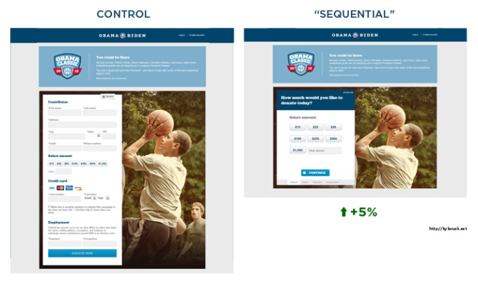
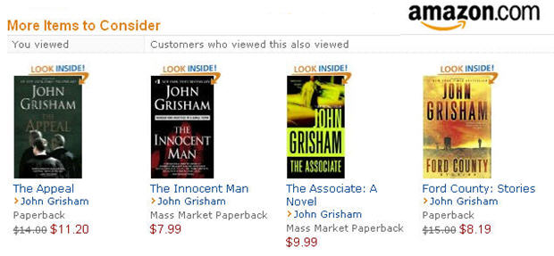
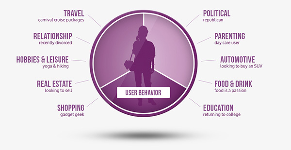
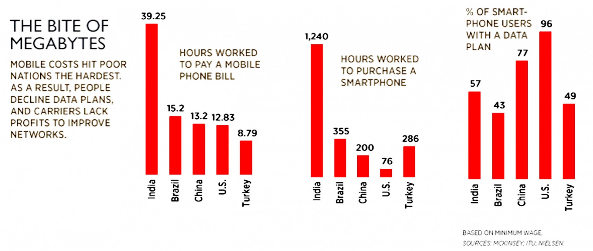

A/B testing - web applications with different features
Consumer recommendations - Amazon, Netflix, etc.
Consumer trends - How people use certain products
FastCompany - The Best (and Worst) Times to Post on Social MediaRevenue opportunities - ad targeting, investor/stock forecasting
Accessibility
Map/filter/reduce in a tweet:
— Steven Luscher (@steveluscher) June 10, 2016
map([🌽, 🐮, 🐔], cook)
=> [🍿, 🍔, 🍳]
filter([🍿, 🍔, 🍳], isVegetarian)
=> [🍿, 🍳]
reduce([🍿, 🍳], eat)
=> 💩